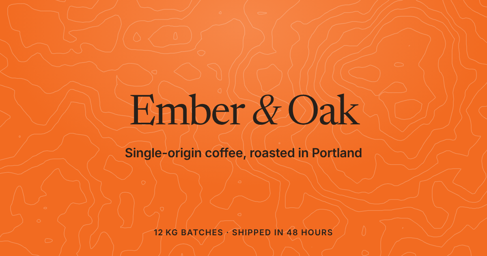

Ember & Oak homepage: search and share preview
Result, 600px
Ember & Oakhttps://emberandoak.example
Ember & Oak: small-batch coffee roasters in Portland, Oregon
Single-origin coffee roasted 12 kg at a time on a 1962 Probat in Southeast Portland, shipped within 48 hours. Bags from $18; subscriptions $18 with shipping.
Social card
